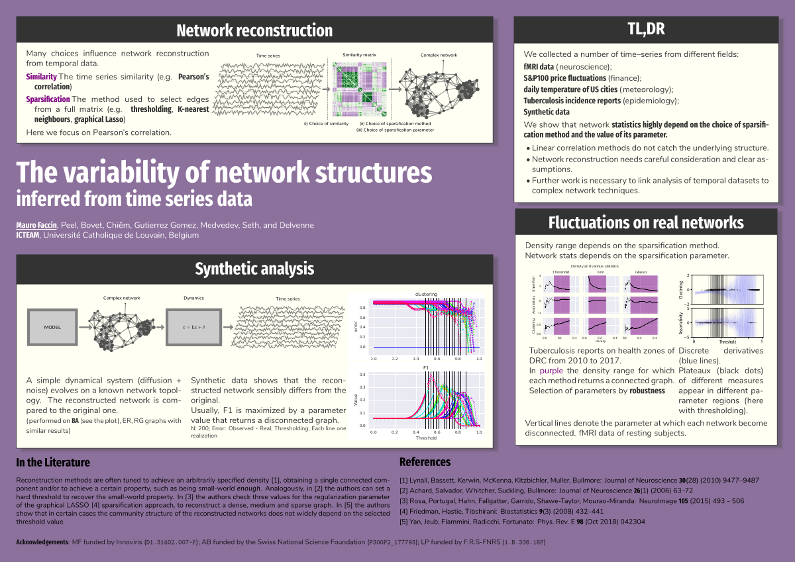

Mauro Faccin
MENU
Publications
Slides & Posters
Codes
Curriculum Vitæ
Contacts
The variability of network structures inferred from time series data
Netsci 2020 @ Rome (Italy --- Online)
Get the PDF from
HERE
See the intro video:
